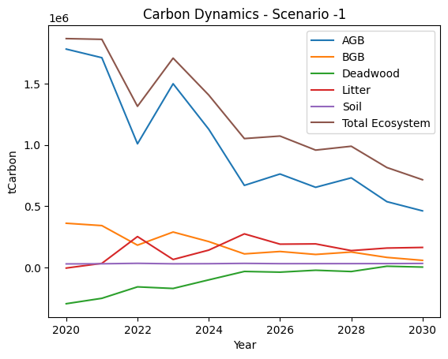

Example Usage
Here is a demonstartion of the potential usage of cbm_runner.
Imports
Firstly, we start of by importing the relevant classes.
from goblin_cbm_runner.default_runner.runner import Runner
from goblin_cbm_runner.resource_manager.cbm_runner_data_manager import DataManager
import pandas as pd
import matplotlib.pyplot as plt
import os
import warnings
# Filter out the RuntimeWarning related to unsupported linux distribution
warnings.filterwarnings("ignore", message="untested linux distribution:", category=RuntimeWarning)
The Runner class is basically used to set to run the scenarios based on the configuration files for the CBM CFS3.
The Runner
In the first example below, we will set the path to the configurations and data, define the base and target year. Finally, we will create a directory for our outputs
# path to data
path = "../tests/data/runner_input/"
# afforestation data for each scenario
afforest_data = pd.read_csv(
os.path.join(path, "cbm_afforestation.csv"), index_col=0
)
# basic configuration file
config = os.path.join(path, "cbm_factory.yaml")
# scenario_data
sc_data = pd.read_csv(os.path.join(path, "scenario_dataframe.csv"))
# calibration and end point
calibration_year = 2020
# instance of the DataManager class
data_manager = DataManager(calibration_year = calibration_year,
config_file_path=config,
scenario_data=sc_data,
afforest_data=afforest_data)
#Make directory to store exported file
os.mkdir("jupyter_example")
data_path = "./jupyter_example/"
Data Inputs Example
Here we can see what our data inputs look like.
# Scenario afforestation areas
print(afforest_data)
scenario species yield_class total_area
0 -1 Sitka YC17_20 0.000000
1 -1 Sitka YC20_24 0.000000
2 -1 Sitka YC24_30 0.000000
3 -1 SGB YC6 0.000000
4 -1 SGB YC6 0.000000
5 -1 SGB YC6 0.000000
6 0 Sitka YC24_30 418877.449812
7 0 SGB YC6 718134.067390
8 0 Sitka YC20_24 508198.559238
9 0 SGB YC6 871268.430782
10 0 Sitka YC17_20 5823.216747
11 0 SGB YC6 9983.469700
12 1 Sitka YC24_30 418877.449812
13 1 SGB YC6 718134.067390
14 1 Sitka YC20_24 508198.559238
15 1 SGB YC6 871268.430782
16 1 Sitka YC17_20 5823.216747
17 1 SGB YC6 9983.469700
# Configuration file
with open(config, 'r') as file:
config_contents = file.read()
print(config_contents)
Dynamic_Afforestation:
afforest_delay: 5
annual_afforestation_rate_pre_delay: 1200
species_distribution:
- Sitka: 0.7
- SGB: 0.3
Forest_management:
intensity: low
Classifiers:
baseline:
harvest:
clearfell:
- conifer: 0.95
- broadleaf: 0.6
thinning:
- conifer: 0.5
- broadleaf: 0.9
scenario:
harvest:
clearfell:
- broadleaf: 0.0
thinning:
- broadleaf: 0.5
age_classes:
max_age: 100
age_interval: 5
species:
- Sitka
- SGB
yield_class:
Sitka:
- YC13_16: 0.37
- YC17_20: 0.26
- YC20_24: 0.20
- YC24_30: 0.17
SGB:
- YC10: 1
# Scenario data
print(sc_data)
Unnamed: 0 Scenarios Cattle systems Manure management Dairy pop \
0 0 0 Dairy tank solid 0.000000
1 1 0 Dairy tank liquid 172390.090632
2 2 0 Beef tank solid 0.000000
3 3 0 Beef tank liquid 0.000000
4 4 0 Lowland sheep tank liquid 0.000000
5 5 0 Upland sheep tank liquid 0.000000
6 6 1 Dairy tank solid 0.000000
7 7 1 Dairy tank liquid 172390.090632
8 8 1 Beef tank solid 0.000000
9 9 1 Beef tank liquid 0.000000
10 10 1 Lowland sheep tank liquid 0.000000
11 11 1 Upland sheep tank liquid 0.000000
Beef pop Dairy prod Beef prod mm_storage Cattle EF ... \
0 0.000000 0.087908 0.500607 0 0 ...
1 0.000000 0.087908 0.500607 0 0 ...
2 0.000000 0.087908 0.500607 0 0 ...
3 27807.487071 0.087908 0.500607 0 0 ...
4 0.000000 0.087908 0.500607 0 0 ...
5 0.000000 0.087908 0.500607 0 0 ...
6 0.000000 0.087908 0.500607 0 0 ...
7 0.000000 0.087908 0.500607 0 0 ...
8 0.000000 0.087908 0.500607 0 0 ...
9 27807.487071 0.087908 0.500607 0 0 ...
10 0.000000 0.087908 0.500607 0 0 ...
11 0.000000 0.087908 0.500607 0 0 ...
Land rewetting Grass management Upland sheep pop Upland sheep prod \
0 0 0.08792 0 0
1 0 0.08792 0 0
2 0 0.08792 0 0
3 0 0.08792 0 0
4 0 0.08792 0 0
5 0 0.08792 9453 0
6 0 0.08792 0 0
7 0 0.08792 0 0
8 0 0.08792 0 0
9 0 0.08792 0 0
10 0 0.08792 0 0
11 0 0.08792 9453 0
Lowland sheep pop Lowland sheep prod Dairy Pasture fertilisation \
0 0 0 136.870525
1 0 0 136.870525
2 0 0 136.870525
3 0 0 136.870525
4 37812 0 136.870525
5 0 0 136.870525
6 0 0 136.870525
7 0 0 136.870525
8 0 0 136.870525
9 0 0 136.870525
10 37812 0 136.870525
11 0 0 136.870525
Beef Pasture fertilisation Broadleaf proportion Afforest Year
0 105.001711 0.591629 2051
1 105.001711 0.591629 2051
2 105.001711 0.591629 2051
3 105.001711 0.591629 2051
4 105.001711 0.591629 2051
5 105.001711 0.591629 2051
6 105.001711 0.591629 2051
7 105.001711 0.591629 2051
8 105.001711 0.591629 2051
9 105.001711 0.591629 2051
10 105.001711 0.591629 2051
11 105.001711 0.591629 2051
[12 rows x 29 columns]
Define classes and Run Scenarios
# instance of the Runner class
runner = Runner(data_manager)
🚀 Starting FM Simulation...
✅ FM Simulation Complete.
Cleaning scenario SIT data directories
No eligible stands found for DISTID1 in Year 1
No eligible stands found for DISTID2 in Year 1
No eligible stands found for DISTID1 in Year 2
No eligible stands found for DISTID2 in Year 2
No eligible stands found for DISTID1 in Year 3
No eligible stands found for DISTID2 in Year 3
No eligible stands found for DISTID1 in Year 4
No eligible stands found for DISTID2 in Year 4
No eligible stands found for DISTID1 in Year 5
No eligible stands found for DISTID2 in Year 5
No eligible stands found for DISTID1 in Year 6
No eligible stands found for DISTID2 in Year 6
No eligible stands found for DISTID1 in Year 7
No eligible stands found for DISTID2 in Year 7
No eligible stands found for DISTID1 in Year 8
No eligible stands found for DISTID2 in Year 8
No eligible stands found for DISTID1 in Year 9
No eligible stands found for DISTID2 in Year 9
No eligible stands found for DISTID1 in Year 10
No eligible stands found for DISTID1 in Year 11
No eligible stands found for DISTID1 in Year 12
No eligible stands found for DISTID1 in Year 13
No eligible stands found for DISTID1 in Year 14
No eligible stands found for DISTID1 in Year 15
No eligible stands found for DISTID1 in Year 16
No eligible stands found for DISTID1 in Year 17
No eligible stands found for DISTID1 in Year 18
No eligible stands found for DISTID1 in Year 19
No eligible stands found for DISTID1 in Year 20
No eligible stands found for DISTID1 in Year 21
No eligible stands found for DISTID1 in Year 22
No eligible stands found for DISTID1 in Year 23
No eligible stands found for DISTID1 in Year 24
No eligible stands found for DISTID1 in Year 25
No eligible stands found for DISTID1 in Year 26
No eligible stands found for DISTID1 in Year 1
No eligible stands found for DISTID2 in Year 1
No eligible stands found for DISTID1 in Year 2
No eligible stands found for DISTID2 in Year 2
No eligible stands found for DISTID1 in Year 3
No eligible stands found for DISTID2 in Year 3
No eligible stands found for DISTID1 in Year 4
No eligible stands found for DISTID2 in Year 4
No eligible stands found for DISTID1 in Year 5
No eligible stands found for DISTID2 in Year 5
No eligible stands found for DISTID1 in Year 6
No eligible stands found for DISTID2 in Year 6
No eligible stands found for DISTID1 in Year 7
No eligible stands found for DISTID2 in Year 7
No eligible stands found for DISTID1 in Year 8
No eligible stands found for DISTID2 in Year 8
No eligible stands found for DISTID1 in Year 9
No eligible stands found for DISTID2 in Year 9
No eligible stands found for DISTID1 in Year 10
No eligible stands found for DISTID1 in Year 11
No eligible stands found for DISTID1 in Year 12
No eligible stands found for DISTID1 in Year 13
No eligible stands found for DISTID1 in Year 14
No eligible stands found for DISTID1 in Year 15
No eligible stands found for DISTID1 in Year 16
No eligible stands found for DISTID1 in Year 17
No eligible stands found for DISTID1 in Year 18
No eligible stands found for DISTID1 in Year 19
No eligible stands found for DISTID1 in Year 20
No eligible stands found for DISTID1 in Year 21
No eligible stands found for DISTID1 in Year 22
No eligible stands found for DISTID1 in Year 23
No eligible stands found for DISTID1 in Year 24
No eligible stands found for DISTID1 in Year 25
No eligible stands found for DISTID1 in Year 26
🚀 Starting AF Simulation...
✅ AF Simulation Complete.
# generation of aggregated results
runner.run_aggregate_scenarios().to_csv(os.path.join(data_path, "c_stock.csv"))
# generation of annual flux results
runner.run_flux_scenarios().to_csv(os.path.join(data_path, "c_flux.csv"))
🚀 Starting Scenario 0 Simulation...
✅ Scenario 0 Simulation Complete.
🚀 Starting Scenario 1 Simulation...
✅ Scenario 1 Simulation Complete.
Running Forest Flux scenario -1
Running Forest Flux scenario 0
🚀 Starting Scenario 0 Simulation...
✅ Scenario 0 Simulation Complete.
Running Forest Flux scenario 1
🚀 Starting Scenario 1 Simulation...
✅ Scenario 1 Simulation Complete.
#Lets try importing and displaying the information
stocks = pd.read_csv(os.path.join(data_path, "c_stock.csv"), index_col=0)
fluxes = pd.read_csv(os.path.join(data_path, "c_flux.csv"), index_col=0)
#We can always store these in memory without exporting to disk.
stocks
| Year | Scenario | AGB | BGB | Deadwood | Litter | Soil | Harvest | Total Ecosystem | |
|---|---|---|---|---|---|---|---|---|---|
| 0 | 2016 | -1 | 1.125034e+08 | 1.936781e+07 | 4.492602e+07 | 1.812466e+07 | 5.789391e+07 | 1.003831e+08 | 2.528158e+08 |
| 1 | 2017 | -1 | 1.145310e+08 | 1.977693e+07 | 4.441478e+07 | 1.762858e+07 | 5.791091e+07 | 1.006116e+08 | 2.542622e+08 |
| 2 | 2018 | -1 | 1.165017e+08 | 2.017388e+07 | 4.396150e+07 | 1.729561e+07 | 5.793214e+07 | 1.008845e+08 | 2.558648e+08 |
| 3 | 2019 | -1 | 1.184474e+08 | 2.056900e+07 | 4.356020e+07 | 1.709952e+07 | 5.795659e+07 | 1.011552e+08 | 2.576327e+08 |
| 4 | 2020 | -1 | 1.203798e+08 | 2.095582e+07 | 4.321098e+07 | 1.696665e+07 | 5.798241e+07 | 1.014659e+08 | 2.594956e+08 |
| ... | ... | ... | ... | ... | ... | ... | ... | ... | ... |
| 242 | 2096 | 1 | 4.627289e+08 | 8.211943e+07 | 9.694032e+07 | 7.356695e+07 | 1.374653e+08 | 2.890441e+08 | 8.528210e+08 |
| 243 | 2097 | 1 | 4.691974e+08 | 8.268849e+07 | 9.864505e+07 | 7.453157e+07 | 1.378182e+08 | 2.927989e+08 | 8.628807e+08 |
| 244 | 2098 | 1 | 4.756283e+08 | 8.324426e+07 | 1.003528e+08 | 7.543833e+07 | 1.381733e+08 | 2.965408e+08 | 8.728370e+08 |
| 245 | 2099 | 1 | 4.821361e+08 | 8.380656e+07 | 1.020566e+08 | 7.628700e+07 | 1.385311e+08 | 3.001825e+08 | 8.828174e+08 |
| 246 | 2100 | 1 | 4.888560e+08 | 8.441926e+07 | 1.037306e+08 | 7.702081e+07 | 1.388912e+08 | 3.036538e+08 | 8.929179e+08 |
247 rows × 9 columns
fluxes
| Year | Scenario | AGB | BGB | Deadwood | Litter | Soil | Harvest | Total Ecosystem | |
|---|---|---|---|---|---|---|---|---|---|
| 0 | 2016 | -1 | 2.027611e+06 | 409126.559878 | -5.112429e+05 | -496079.040481 | 16994.710818 | 2.284430e+05 | 1.446411e+06 |
| 1 | 2017 | -1 | 1.970650e+06 | 396943.335208 | -4.532738e+05 | -332970.350296 | 21230.433826 | 2.729620e+05 | 1.602580e+06 |
| 2 | 2018 | -1 | 1.945712e+06 | 395121.483602 | -4.013049e+05 | -196091.844623 | 24454.962617 | 2.706260e+05 | 1.767892e+06 |
| 3 | 2019 | -1 | 1.932359e+06 | 386823.082869 | -3.492219e+05 | -132871.230706 | 25819.280143 | 3.107233e+05 | 1.862908e+06 |
| 4 | 2020 | -1 | 1.782359e+06 | 360075.111849 | -2.968981e+05 | -5766.580376 | 28254.614038 | 3.889428e+05 | 1.868024e+06 |
| ... | ... | ... | ... | ... | ... | ... | ... | ... | ... |
| 239 | 2095 | 1 | 6.775189e+06 | 642816.465949 | 1.663725e+06 | 930998.844341 | 349052.773459 | 3.590507e+06 | 1.036178e+07 |
| 240 | 2096 | 1 | 6.468418e+06 | 569054.594538 | 1.704733e+06 | 964625.281789 | 352856.815596 | 3.754872e+06 | 1.005969e+07 |
| 241 | 2097 | 1 | 6.430905e+06 | 555771.984586 | 1.707780e+06 | 906752.514136 | 355064.056206 | 3.741852e+06 | 9.956273e+06 |
| 242 | 2098 | 1 | 6.507791e+06 | 562298.976786 | 1.703811e+06 | 848676.776591 | 357861.713373 | 3.641756e+06 | 9.980439e+06 |
| 243 | 2099 | 1 | 6.719950e+06 | 612706.095959 | 1.673955e+06 | 733805.922828 | 360113.656391 | 3.471217e+06 | 1.010053e+07 |
244 rows × 9 columns
Plot Fluxes for Baseline
# 1. Limit Year Range
data_to_plot = fluxes[(fluxes['Year'] >= 2020) & (fluxes['Year'] <= 2030)]
# 2. Select Scenario
scenario_to_plot = -1
data_to_plot = data_to_plot[data_to_plot['Scenario'] == scenario_to_plot]
# 3. Plotting
plt.plot(data_to_plot['Year'], data_to_plot['AGB'], label='AGB')
plt.plot(data_to_plot['Year'], data_to_plot['BGB'], label='BGB')
plt.plot(data_to_plot['Year'], data_to_plot['Deadwood'], label='Deadwood')
plt.plot(data_to_plot['Year'], data_to_plot['Litter'], label='Litter')
plt.plot(data_to_plot['Year'], data_to_plot['Soil'], label='Soil')
plt.plot(data_to_plot['Year'], data_to_plot['Total Ecosystem'], label='Total Ecosystem')
# 4. Customization
plt.xlabel('Year')
plt.ylabel('tCarbon')
plt.title(f'Carbon Dynamics - Scenario {scenario_to_plot}')
plt.legend()
plt.show()

# Remove Generated files
for filename in os.listdir(data_path):
file_path = os.path.join(data_path, filename)
try:
if os.path.isfile(file_path):
os.remove(file_path)
print(f"Deleted file: {file_path}")
except Exception as e:
print(f"Error deleting file: {file_path}. Reason: {e}")
#Remove direcotry
os.rmdir(data_path)
Deleted file: ./jupyter_example/c_flux.csv
Deleted file: ./jupyter_example/c_stock.csv